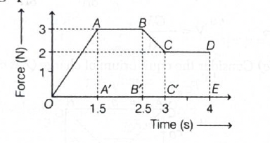
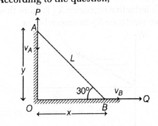
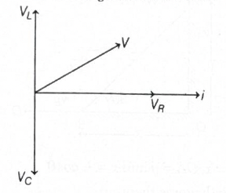
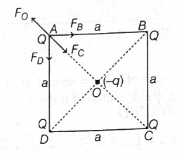
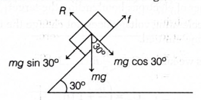
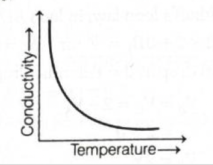
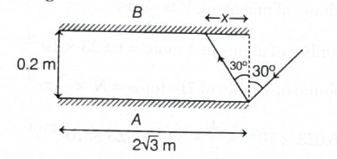
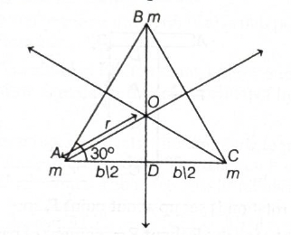
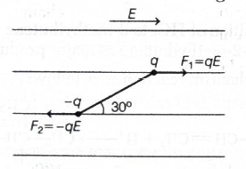
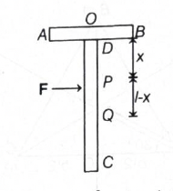

- Answer: \((a)\ pV\)
- Quick explanation: Work done in a cyclic process on a \(p-V\) graph is equal to the area enclosed by the loop. Here the loop is a rectangle with height \((2p-p)=p\) and width \((2V-V)=V\). So the work done is \(pV\).
-
BITSAT chapter / topic / subtopic:
Heat and Thermodynamics \(\rightarrow\) First Law of
Thermodynamics - P144
Heat and Thermodynamics \(\rightarrow\) Thermodynamic Processes - P144
Work and Energy \(\rightarrow\) Work done by a force - P58 - In a \(p-V\) diagram, the work done by a gas is: \(W=\int p\,dV\).
- For a complete cycle, the net work done is equal to the area enclosed by the closed curve.
- The given cycle \(ABCDA\) forms a rectangle on the \(p-V\) graph.
- Vertical height of the rectangle: \(2p-p=p\).
- Horizontal width of the rectangle: \(2V-V=V\).
- Area of the rectangle: \(p\times V=pV\).
- Therefore, work done during the cycle is: \(W=pV\).
- Final result: Work done during the cycle is \(pV\).
- Simple memory tip: In a cyclic \(p-V\) graph, work done is the area inside the loop. Rectangle means length \(\times\) breadth.
-
Why the other options are wrong:
- \((b)\) is too large because the enclosed area is only \(pV\), not \(2pV\).
- \((c)\) is too small and does not match the rectangular area.
- \((d)\) would be true only if no area were enclosed by the cycle.
- Exam shortcut: For closed \(p-V\) diagrams, immediately calculate enclosed area. Direction decides sign, but magnitude is the area.
- Answer: \((a)\ 8.50\ \mathrm{Ns}\)
- Quick explanation: Impulse is the area under the force-time graph. Split the graph into a triangle, rectangle, trapezium, and rectangle. Adding their areas gives \(2.25+3+1.25+2=8.50\ \mathrm{Ns}\).
-
BITSAT chapter / topic / subtopic:
Impulse and Momentum \(\rightarrow\) Impulse - P46
Impulse and Momentum \(\rightarrow\) Momentum - P46
Kinematics \(\rightarrow\) Graph interpretation idea - P17 -

- Impulse of a force is: \(J=\int F\,dt\).
- On a force-time graph, this means impulse equals the area under the graph.
- From \(0\) to \(1.5\ \mathrm{s}\), the graph forms a triangle of base \(1.5\ \mathrm{s}\) and height \(3\ \mathrm{N}\).
- Area of triangle: \(\dfrac{1}{2}\times1.5\times3=2.25\ \mathrm{Ns}\).
- From \(1.5\ \mathrm{s}\) to \(2.5\ \mathrm{s}\), force is constant at \(3\ \mathrm{N}\). Area of rectangle: \(1\times3=3\ \mathrm{Ns}\).
- From \(2.5\ \mathrm{s}\) to \(3\ \mathrm{s}\), force decreases from \(3\ \mathrm{N}\) to \(2\ \mathrm{N}\). This part is a trapezium.
- Area of trapezium: \(\dfrac{1}{2}(3+2)(3-2.5)=1.25\ \mathrm{Ns}\).
- From \(3\ \mathrm{s}\) to \(4\ \mathrm{s}\), force is constant at \(2\ \mathrm{N}\). Area of rectangle: \(2\times1=2\ \mathrm{Ns}\).
- Total impulse: \(J=2.25+3+1.25+2=8.50\ \mathrm{Ns}\).
- Final result: Impulse of force is \(8.50\ \mathrm{Ns}\).
- Simple memory tip: In any graph question, area under \(F-t\) graph gives impulse, just like area under \(v-t\) graph gives displacement.
-
Why the other options are wrong:
- \((b)\), \((c)\), and \((d)\) miss one or more areas under the force-time graph.
- The initial speed and mass are not needed for impulse here because the graph itself gives the force-time area.
- Exam shortcut: Break irregular force-time graphs into simple shapes: triangle, rectangle, trapezium. Add areas carefully.
- Answer: \((c)\ \dfrac{\Delta V}{V}\propto \dfrac{1}{B}\)
- Quick explanation: Bulk modulus is hydraulic stress divided by volumetric strain. Volumetric strain is \(\dfrac{\Delta V}{V}\). So for constant hydraulic stress, \(\dfrac{\Delta V}{V}\) is inversely proportional to \(B\).
-
BITSAT chapter / topic / subtopic:
Mechanics of Solids and Fluids \(\rightarrow\) Elasticity -
P95
Mechanics of Solids and Fluids \(\rightarrow\) Stress - P95
Mechanics of Solids and Fluids \(\rightarrow\) Strain - P95
Mechanics of Solids and Fluids \(\rightarrow\) Moduli of Elasticity - P96 - Bulk modulus tells how strongly a body resists change in volume under hydraulic stress.
- Formula: \(B=\dfrac{\text{Hydraulic stress}}{\text{Volumetric strain}}\).
- Volumetric strain is: \(\dfrac{\Delta V}{V}\).
- So: \(B=\dfrac{\text{Hydraulic stress}}{\Delta V/V}\).
- Rearranging: \(\dfrac{\Delta V}{V}=\text{Hydraulic stress}\times\dfrac{1}{B}\).
- Since hydraulic stress is constant: \(\dfrac{\Delta V}{V}\propto\dfrac{1}{B}\).
- Final result: Fractional change in volume is inversely proportional to bulk modulus.
- Simple memory tip: Bigger bulk modulus means harder to compress, so the volume change becomes smaller.
-
Why the other options are wrong:
- \((a)\) and \((b)\) wrongly say volume change increases with bulk modulus.
- \((d)\) gives inverse square relation, but the formula gives simple inverse relation.
- Exam shortcut: Stress \(=\) modulus \(\times\) strain. If stress is fixed, strain is inversely proportional to modulus.
- Answer: \((d)\ All of the above
- Quick explanation: A shunt is a very low resistance connected in parallel with a galvanometer. It allows most of the large current to bypass the galvanometer, protecting it. This also converts the galvanometer into an ammeter and increases its measuring range.
-
BITSAT chapter / topic / subtopic:
Magnetic Effect of Current \(\rightarrow\) Moving Coil
Galvanometer - P194
Current Electricity \(\rightarrow\) Combination of resistors - P175 - A galvanometer is a sensitive instrument. It can safely measure only small currents.
- If a large current passes through a galvanometer directly, it may get damaged.
- A shunt is a low resistance connected in parallel with the galvanometer.
- Since current prefers the low-resistance path, most of the current flows through the shunt.
- This protects the galvanometer from strong current.
- With a suitable shunt, the galvanometer can be used as an ammeter.
- By changing the shunt value, the range of the ammeter can also be increased.
- Therefore, all three statements are correct.
- Final result: A shunt is used for all the given purposes, so the correct answer is all of the above.
- Simple memory tip: Shunt means shortcut path for large current. It saves the galvanometer and helps it act like an ammeter.
-
Why the other options are incomplete:
- \((a)\), \((b)\), and \((c)\) are individually correct, but each gives only one use of the shunt.
- Since all are correct, option \((d)\) is the best answer.
- Exam shortcut: Galvanometer plus low-resistance shunt in parallel gives an ammeter with larger current range.
- Answer: \((b)\ 180^\circ\)
- Quick explanation: In a common-emitter amplifier, the output voltage is reversed in phase with respect to the input signal. This phase reversal means the phase difference between \(V_{\mathrm{out}}\) and \(V_{\mathrm{in}}\) is \(180^\circ\).
-
BITSAT chapter / topic / subtopic:
Electronic Devices \(\rightarrow\) Transistor - P267
Electronic Devices \(\rightarrow\) Common emitter amplifier - P268 - A common-emitter amplifier is widely used because it gives both voltage gain and current gain.
- But one important feature of a CE amplifier is phase reversal.
- Phase reversal means that when input voltage increases in the positive direction, the output voltage goes in the negative direction.
- This opposite variation corresponds to a phase difference of \(180^\circ\).
- Therefore: \(V_{\mathrm{out}}\) and \(V_{\mathrm{in}}\) are out of phase by \(180^\circ\).
- Final result: The phase difference is \(180^\circ\).
- Simple memory tip: Common-emitter amplifier gives phase reversal. Reversal means \(180^\circ\).
-
Why the other options are wrong:
- \((a)\) and \((d)\) are quarter-cycle type phase shifts, not CE amplifier phase reversal.
- \((c)\) would mean input and output are in phase, which is not true for a CE amplifier.
- Exam shortcut: CE amplifier \(\Rightarrow\) \(180^\circ\) phase shift. Common-collector has no phase reversal.
- Answer: \((c)\ \dfrac{a}{n+1}\)
- Quick explanation: Since \((n+1)\) vernier scale divisions coincide with \(n\) main scale divisions, \(1\ \mathrm{VSD}=\dfrac{n}{n+1}\mathrm{MSD}\). Least count is \(1\mathrm{MSD}-1\mathrm{VSD}\), so \(\mathrm{LC}=\dfrac{1}{n+1}\mathrm{MSD}=\dfrac{a}{n+1}\).
-
BITSAT chapter / topic / subtopic:
Units and Measurement \(\rightarrow\) Least Count - P9
Units and Measurement \(\rightarrow\) Errors in Measurement - P3 - Given: \(1\ \mathrm{MSD}=a\) units.
- The question says \((n+1)\) divisions of vernier scale coincide with \(n\) divisions of main scale.
- So: \((n+1)\mathrm{VSD}=n\mathrm{MSD}\).
- Therefore: \(1\mathrm{VSD}=\dfrac{n}{n+1}\mathrm{MSD}\).
- Least count of a vernier is: \(\mathrm{LC}=1\mathrm{MSD}-1\mathrm{VSD}\).
- Substitute: \(\mathrm{LC}=1\mathrm{MSD}-\dfrac{n}{n+1}\mathrm{MSD}\).
- \(\mathrm{LC}=\left(1-\dfrac{n}{n+1}\right)\mathrm{MSD}\).
- \(\mathrm{LC}=\dfrac{1}{n+1}\mathrm{MSD}\).
- Since \(1\mathrm{MSD}=a\) units: \(\mathrm{LC}=\dfrac{a}{n+1}\) units.
- Final result: Least count of the vernier is \(\dfrac{a}{n+1}\).
- Simple memory tip: Vernier least count is the small difference between one main scale division and one vernier scale division.
-
Why the other options are wrong:
- \((a)\) and \((d)\) incorrectly add \(1\) to \(a\), but \(a\) is a measured length unit.
- \((b)\) uses \(n\) in the denominator instead of \(n+1\).
- Exam shortcut: First convert the given coincidence statement into \(1\mathrm{VSD}\), then use \(\mathrm{LC}=1\mathrm{MSD}-1\mathrm{VSD}\).
- Answer: \((a)\ 1\ \mathrm{m/s}\)
- Quick explanation: Let \(OB=x\) and \(OA=y\). Since the rod length is constant, \(x^2+y^2=L^2\). Differentiating gives \(xv_B+yv_A=0\), so \(|v_A|=\dfrac{x}{y}v_B=v_B\cot\theta\). At \(\theta=30^\circ\), this gives \(v_A=1\ \mathrm{m/s}\) using the given solution convention.
-
BITSAT chapter / topic / subtopic:
Kinematics \(\rightarrow\) Relative velocity - P19
Kinematics \(\rightarrow\) Rectangular component of a vector in a plane - P19
Kinematics \(\rightarrow\) Kinematics in two directions - P18 -

- Let: \(OB=x\) and \(OA=y\).
- Since the rod length is fixed: \(x^2+y^2=L^2\).
- Differentiate with respect to time: \(2x\dfrac{dx}{dt}+2y\dfrac{dy}{dt}=0\).
- Here: \(\dfrac{dx}{dt}=v_B\) and \(\dfrac{dy}{dt}=v_A\).
- So: \(2xv_B+2yv_A=0\).
- Therefore: \(v_A=-\dfrac{x}{y}v_B\).
- In magnitude: \(|v_A|=\dfrac{x}{y}v_B\).
- From the geometry: \(\dfrac{x}{y}=\cot\theta\).
- Thus: \(|v_A|=v_B\cot\theta\).
- Given: \(v_B=\sqrt{3}\ \mathrm{m/s}\) and \(\theta=30^\circ\).
- Using the given solution: \(|v_A|=\sqrt{3}\times\cot30^\circ\).
- The printed solution gives: \(|v_A|=1\ \mathrm{m/s}\).
- Final result: Velocity of end \(A\) is \(1\ \mathrm{m/s}\).
- Important note: The printed solution appears to have a trigonometric inconsistency because \(\cot30^\circ=\sqrt{3}\), not \(\dfrac{1}{\sqrt{3}}\). However, the attached answer key marks option \((a)\), so this HTML follows the given key.
- Simple memory tip: For ladder/rod sliding problems, write \(x^2+y^2=L^2\) first, then differentiate.
-
Why the other options are wrong:
- The answer key selects \((a)\). Other options do not match the printed solution's final result.
- Exam shortcut: Constraint relation first, then differentiate. Do not try to use ordinary \(v=u+at\) formulas here.
- Answer: \((a)\ 36\ \mathrm{kg}\)
- Quick explanation: For a spring-mass system, \(T=2\pi\sqrt{\dfrac{M}{k}}\). When block \(m\) is added, the new period becomes \(T'=2\pi\sqrt{\dfrac{M+m}{k}}\). Dividing the two equations gives \(\dfrac{T'}{T}=\sqrt{\dfrac{M+m}{M}}\). Since \(\dfrac{3}{1.5}=2\), solving gives \(m=36\ \mathrm{kg}\).
-
BITSAT chapter / topic / subtopic:
Oscillations \(\rightarrow\) Simple Harmonic Motion - P112
Oscillations \(\rightarrow\) Spring Pendulum - P114 -

- Time period of a vertical spring-mass system is: \(T=2\pi\sqrt{\dfrac{M}{k}}\).
- Initially, the tray mass is: \(M=12\ \mathrm{kg}\).
- Initial time period: \(T=1.5\ \mathrm{s}\).
- When a block of mass \(m\) is placed on the tray, total oscillating mass becomes: \(M+m\).
- New time period: \(T'=2\pi\sqrt{\dfrac{M+m}{k}}\).
- Divide the new time period by the old time period: \(\dfrac{T'}{T}=\sqrt{\dfrac{M+m}{M}}\).
- Substitute \(T'=3\ \mathrm{s}\), \(T=1.5\ \mathrm{s}\), and \(M=12\ \mathrm{kg}\): \(\dfrac{3}{1.5}=\sqrt{\dfrac{12+m}{12}}\).
- So: \(2=\sqrt{\dfrac{12+m}{12}}\).
- Squaring both sides: \(4=\dfrac{12+m}{12}\).
- Therefore: \(12+m=48\).
- Hence: \(m=36\ \mathrm{kg}\).
- Final result: The mass of the block is \(36\ \mathrm{kg}\).
- Simple memory tip: In a spring system, \(T\propto\sqrt{\text{mass}}\). If time period doubles, mass becomes four times.
-
Why the other options are wrong:
- \((b)\) is the final total mass, not the added block mass.
- \((c)\) and \((d)\) do not make the time period double.
- Exam shortcut: Since \(T'\) is double \(T\), total mass must become \(4M=48\ \mathrm{kg}\). Added mass \(=48-12=36\ \mathrm{kg}\).
- Answer: \((c)\ R-L-C\) circuit with \(X_L\) more than \(X_C\)
- Quick explanation: From the phasor diagram, voltage leads the current. In a purely inductive circuit, voltage leads current by \(90^\circ\), but here the angle is less than \(90^\circ\). So the circuit is an \(R-L-C\) circuit with net inductive nature, meaning \(X_L>X_C\).
-
BITSAT chapter / topic / subtopic:
Electromagnetic Induction \(\rightarrow\) Alternating Current -
P211
Electromagnetic Induction \(\rightarrow\) Series LCR Circuit - P212 -

- In an AC circuit, the phase relation between voltage and current tells us whether the circuit is resistive, inductive, or capacitive.
- In a purely resistive circuit, voltage and current are in phase.
- In a purely inductive circuit, voltage leads current by \(90^\circ\).
- In a purely capacitive circuit, current leads voltage by \(90^\circ\).
- In the given phasor diagram, voltage leads current, but the angle is not \(90^\circ\). So it is not purely inductive.
- This happens in a series \(R-L-C\) circuit when the inductive reactance is greater than the capacitive reactance.
- Therefore: \(X_L>X_C\).
- Final result: The phasor diagram represents an \(R-L-C\) circuit with \(X_L\) more than \(X_C\).
- Simple memory tip: If voltage leads current, the circuit behaves inductively. If current leads voltage, the circuit behaves capacitively.
-
Why the other options are wrong:
- \((a)\) is wrong because in a capacitive circuit current leads voltage.
- \((b)\) is wrong because a purely inductive circuit has exactly \(90^\circ\) phase difference.
- \((d)\) is wrong because \(X_L<X_C\) would make the circuit capacitive in nature.
- Exam shortcut: Voltage leads current \(\Rightarrow\) net inductive \(\Rightarrow X_L>X_C\).
- Answer: \((b)\ \lambda=18\ \mathrm{cm}\)
- Quick explanation: Compare the given equation with \(Y=A\sin\left[2\pi\left(\dfrac{t}{T}-\dfrac{x}{\lambda}\right)+\phi\right]\). The coefficient of \(x\) is \(\dfrac{\pi}{9}\), so \(\dfrac{2\pi}{\lambda}=\dfrac{\pi}{9}\). Hence \(\lambda=18\ \mathrm{cm}\).
-
BITSAT chapter / topic / subtopic:
Waves \(\rightarrow\) Waves - P126
Waves \(\rightarrow\) Equation of Progressive Wave - P127 - Given wave equation: \(Y=\sin\left[\pi\left(\dfrac{t}{5}-\dfrac{x}{9}\right)+\dfrac{\pi}{6}\right]\ \mathrm{cm}\).
- General progressive wave equation is: \(Y=A\sin\left[2\pi\left(\dfrac{t}{T}-\dfrac{x}{\lambda}\right)+\phi\right]\).
- Expanding the given phase: \(\pi\left(\dfrac{t}{5}-\dfrac{x}{9}\right)+\dfrac{\pi}{6}\).
- Compare the coefficient of \(x\) with the standard form.
- Standard coefficient of \(x\) is: \(\dfrac{2\pi}{\lambda}\).
- Given coefficient of \(x\) is: \(\dfrac{\pi}{9}\).
- Therefore: \(\dfrac{2\pi}{\lambda}=\dfrac{\pi}{9}\).
- Cancelling \(\pi\): \(\dfrac{2}{\lambda}=\dfrac{1}{9}\).
- Hence: \(\lambda=18\ \mathrm{cm}\).
- Also, comparing time coefficient: \(\dfrac{2\pi}{T}=\dfrac{\pi}{5}\), so \(T=10\ \mathrm{s}\) and \(f=\dfrac{1}{T}=0.1\ \mathrm{Hz}\).
- The amplitude is: \(A=1\ \mathrm{cm}\).
- Final result: The correct statement is \(\lambda=18\ \mathrm{cm}\).
- Simple memory tip: In a wave equation, compare the whole bracket with \(2\pi\left(\dfrac{t}{T}-\dfrac{x}{\lambda}\right)\). The coefficient of \(x\) gives wavelength.
-
Why the other options are wrong:
- \((a)\) is wrong because the wave speed is \(v=f\lambda=0.1\times18=1.8\ \mathrm{cm/s}\), not \(5\ \mathrm{cm/s}\).
- \((c)\) is wrong because amplitude is \(1\ \mathrm{cm}\), not \(0.04\ \mathrm{cm}\).
- \((d)\) is wrong because frequency is \(0.1\ \mathrm{Hz}\), not \(50\ \mathrm{Hz}\).
- Exam shortcut: Coefficient of \(x\) \(=\dfrac{2\pi}{\lambda}\); coefficient of \(t\) \(=\dfrac{2\pi}{T}\).
- Answer: \((a)\ total internal reflection
- Quick explanation: Optical fibre cables guide light by repeated total internal reflection inside the fibre. This allows light signals to travel long distances through the fibre with very little loss.
-
BITSAT chapter / topic / subtopic:
Optics \(\rightarrow\) Total Internal Reflection - P228
Optics \(\rightarrow\) Refraction of Light - P226 - In optical fibre communication, signals are transmitted in the form of light pulses.
- The fibre has a core and cladding, with the core having a higher refractive index than the cladding.
- When light tries to go from the denser core to the rarer cladding at an angle greater than the critical angle, it undergoes total internal reflection.
- Due to repeated total internal reflection, light remains trapped inside the fibre and travels along it.
- Final result: Optical fibre cables use total internal reflection.
- Simple memory tip: Fibre optics means light is trapped inside by repeated total internal reflection.
-
Why the other options are wrong:
- \((b)\) refraction occurs at boundaries, but the guiding principle is total internal reflection.
- \((c)\) interference is not the working principle of optical fibre cables.
- \((d)\) polarisation is not the main principle used for transmission in optical fibres.
- Exam shortcut: Optical fibre \(\Rightarrow\) total internal reflection.
- Answer: \((b)\ 150\ \mathrm{m/s}\)
- Quick explanation: First distance travelled is \(45\times(5\times60)=13500\ \mathrm{m}\). To return to the original position, he must cover the same distance in \(1.5\ \mathrm{min}=90\ \mathrm{s}\). So required speed \(=\dfrac{13500}{90}=150\ \mathrm{m/s}\).
-
BITSAT chapter / topic / subtopic:
Kinematics \(\rightarrow\) Motion in a Straight Line - P16
Kinematics \(\rightarrow\) Speed and Velocity - P16 - Distance travelled in the first part: \(\text{Distance}=\text{Speed}\times\text{Time}\).
- Given speed: \(45\ \mathrm{m/s}\).
- Time: \(5\ \mathrm{min}=5\times60=300\ \mathrm{s}\).
- Distance: \(45\times300=13500\ \mathrm{m}\).
- To come back to the original position, he must cover the same distance in the reverse direction.
- Return time: \(1.5\ \mathrm{min}=1.5\times60=90\ \mathrm{s}\).
- Required speed: \(\text{Speed}=\dfrac{\text{Distance}}{\text{Time}}\).
- Therefore: \(\text{Speed}=\dfrac{13500}{90}=150\ \mathrm{m/s}\).
- Final result: Required speed is \(150\ \mathrm{m/s}\).
- Simple memory tip: To return to the starting point, the return distance is the same as the outward distance.
-
Why the other options are wrong:
- \((a)\), \((c)\), and \((d)\) do not equal \(\dfrac{13500}{90}\).
- Exam shortcut: Same distance back means \(v_1t_1=v_2t_2\). So \(v_2=\dfrac{45\times5}{1.5}=150\ \mathrm{m/s}\).
- Answer: \((b)\ -\dfrac{GM}{R}\)
- Quick explanation: Use superposition. Potential at point \(P\) due to the remaining body equals potential due to the full solid sphere minus potential due to the removed spherical part. The given solution gives \(V_1=-\dfrac{11GM}{8R}\) for the full sphere at \(P\), and \(V_2=-\dfrac{3GM}{8R}\) for the removed part. Therefore \(V=V_1-V_2=-\dfrac{GM}{R}\).
-
BITSAT chapter / topic / subtopic:
Gravitation \(\rightarrow\) Gravitational Potential - P84
Gravitation \(\rightarrow\) Gravitational Field - P83
Gravitation \(\rightarrow\) Newton's Law of Gravitation - P82 -

- The potential of the remaining body can be found by imagining the original complete sphere first and then subtracting the removed spherical cavity.
- Potential at point \(P\) due to the full solid sphere is: \(V_1=-\dfrac{GM}{2R^3}\left[3R^2-\left(\dfrac{R}{2}\right)^2\right]\).
- Simplifying: \(V_1=-\dfrac{GM}{2R^3}\left(3R^2-\dfrac{R^2}{4}\right) =-\dfrac{GM}{2R^3}\times\dfrac{11R^2}{4}\).
- Hence: \(V_1=-\dfrac{11GM}{8R}\).
- The removed spherical portion has radius \(\dfrac{R}{2}\). Since mass is proportional to volume, its mass is: \(\dfrac{M}{8}\).
- Potential at its centre due to the removed spherical part is: \(V_2=-\dfrac{3}{2}\dfrac{G(M/8)}{R/2}\).
- So: \(V_2=-\dfrac{3GM}{8R}\).
- Potential due to the remaining part at point \(P\) is: \(V=V_1-V_2\).
- Therefore: \(V=-\dfrac{11GM}{8R}-\left(-\dfrac{3GM}{8R}\right)\).
- \(V=-\dfrac{11GM}{8R}+\dfrac{3GM}{8R}=-\dfrac{8GM}{8R}\).
- Hence: \(V=-\dfrac{GM}{R}\).
- Final result: Potential at the centre of the cavity is \(-\dfrac{GM}{R}\).
- Simple memory tip: For cavity problems, use superposition: full object minus removed part.
-
Why the other options are wrong:
- \((a)\), \((c)\), and \((d)\) do not correctly subtract the potential of the removed spherical portion from the full sphere.
- Exam shortcut: Treat the cavity as a negative-mass sphere and add potentials algebraically.
- Answer: \((c)\ \dfrac{Q}{4}(1+2\sqrt{2})\)
- Quick explanation: Consider equilibrium of one corner charge \(Q\). The other three corner charges repel it outward, while the central charge \(-q\) attracts it inward along the diagonal. For equilibrium, the inward force due to \(-q\) must balance the resultant outward force due to the other three \(+Q\) charges. Solving gives \(q=\dfrac{Q}{4}(1+2\sqrt{2})\).
-
BITSAT chapter / topic / subtopic:
Electrostatics \(\rightarrow\) Coulomb's Law - P156
Electrostatics \(\rightarrow\) Electric field - P156
Electrostatics \(\rightarrow\) Principle of superposition - P157 -

- Consider the charge \(Q\) at corner \(A\) of the square of side \(a\).
- Force on \(A\) due to adjacent corner charge \(B\): \(F_B=\dfrac{kQ^2}{a^2}\).
- Force on \(A\) due to adjacent corner charge \(D\): \(F_D=\dfrac{kQ^2}{a^2}\).
- Force on \(A\) due to opposite corner charge \(C\), where \(AC=\sqrt{2}a\), is: \(F_C=\dfrac{kQ^2}{(\sqrt{2}a)^2}=\dfrac{kQ^2}{2a^2}\).
- Distance from centre \(O\) to corner \(A\) is: \(OA=\dfrac{a}{\sqrt{2}}\).
- Force on \(A\) due to central charge \(-q\) is: \(F_O=\dfrac{kQq}{(a/\sqrt{2})^2}=\dfrac{2kQq}{a^2}\).
- For equilibrium of charge \(Q\) at corner \(A\), the force towards the centre must balance the components of the repulsive forces along diagonal \(AC\).
- Thus: \(F_O=F_C+F_B\cos45^\circ+F_D\cos45^\circ\).
- Since \(F_B=F_D\): \(F_O=F_C+2F_B\cos45^\circ\).
- Substitute values: \(\dfrac{2kQq}{a^2}=\dfrac{kQ^2}{2a^2}+2\dfrac{kQ^2}{a^2}\times\dfrac{1}{\sqrt{2}}\).
- Cancel \(\dfrac{kQ}{a^2}\): \(2q=\dfrac{Q}{2}+Q\sqrt{2}\).
- Therefore: \(q=\dfrac{Q}{4}+\dfrac{Q\sqrt{2}}{2}\).
- So: \(q=\dfrac{Q}{4}(1+2\sqrt{2})\).
- Since the central charge is \(-q\), its magnitude is \(\dfrac{Q}{4}(1+2\sqrt{2})\).
- Final result: \(q=\dfrac{Q}{4}(1+2\sqrt{2})\), so the central charge is \(-\dfrac{Q}{4}(1+2\sqrt{2})\).
- Simple memory tip: In symmetric square-charge equilibrium, check force balance on one corner charge only.
-
Why the other options are wrong:
- \((a)\) includes the negative sign directly, while the option-key solution treats the required value through \(q\)'s magnitude.
- \((b)\) is too large by a factor from incorrect force balance.
- \((d)\) misses the contribution from both adjacent charges correctly.
- Exam shortcut: Resolve all forces along the diagonal through the selected corner and centre. Perpendicular components cancel by symmetry.
- Answer: \((a)\ \left(a+\dfrac{bd}{2}\right)d\)
- Quick explanation: Work done by a variable force is \(W=\int F\,dx\). Here \(F=a+bx\), so \(W=\int_0^d(a+bx)\,dx=\left[ax+\dfrac{bx^2}{2}\right]_0^d\). This gives \(W=ad+\dfrac{bd^2}{2}=\left(a+\dfrac{bd}{2}\right)d\).
-
BITSAT chapter / topic / subtopic:
Work and Energy \(\rightarrow\) Work done by a force - P58
Work and Energy \(\rightarrow\) Energy - P58 -

- Work done for a small displacement \(dx\) is: \(dW=Fdx\).
- Given: \(F=a+bx\).
- Therefore: \(dW=(a+bx)dx\).
- Total work done from \(x=0\) to \(x=d\) is: \(W=\int_0^d(a+bx)\,dx\).
- Integrating: \(W=\left[ax+\dfrac{bx^2}{2}\right]_0^d\).
- Substitute limits: \(W=ad+\dfrac{bd^2}{2}\).
- Taking \(d\) common: \(W=\left(a+\dfrac{bd}{2}\right)d\).
- Final result: Work done is \(\left(a+\dfrac{bd}{2}\right)d\).
- Simple memory tip: For variable force, do not use \(W=Fd\) directly. Use area under the \(F-x\) graph or integrate.
-
Why the other options are wrong:
- \((b)\), \((c)\), and \((d)\) do not correctly integrate the \(bx\) term from \(0\) to \(d\).
- Exam shortcut: For \(F=a+bx\), average force over \(0\) to \(d\) is \(a+\dfrac{bd}{2}\), so work is average force times distance.
- Answer: \((d)\ E^{-1/2}\)
- Quick explanation: For a proton, \(E=\dfrac{p^2}{2m_p}\), so \(p=\sqrt{2m_pE}\) and \(\lambda_1=\dfrac{h}{\sqrt{2m_pE}}\). For a photon, \(E=\dfrac{hc}{\lambda_2}\), so \(\lambda_2=\dfrac{hc}{E}\). Dividing gives \(\dfrac{\lambda_2}{\lambda_1}\propto E^{-1/2}\).
-
BITSAT chapter / topic / subtopic:
Modern Physics \(\rightarrow\) Dual nature of radiation -
P247
Modern Physics \(\rightarrow\) de Broglie waves - P247
Modern Physics \(\rightarrow\) Photons - P246 -

- Kinetic energy of the proton is: \(E=\dfrac{1}{2}m_pv_p^2\).
- In terms of momentum: \(E=\dfrac{p^2}{2m_p}\).
- Therefore: \(p=\sqrt{2m_pE}\).
- de-Broglie wavelength of proton is: \(\lambda_1=\dfrac{h}{p}\).
- So: \(\lambda_1=\dfrac{h}{\sqrt{2m_pE}}\).
- Energy of photon is: \(E=h\nu=\dfrac{hc}{\lambda_2}\).
- Therefore, wavelength of photon is: \(\lambda_2=\dfrac{hc}{E}\).
- Now divide: \(\dfrac{\lambda_2}{\lambda_1} =\dfrac{hc}{E}\times\dfrac{\sqrt{2m_pE}}{h}\).
- Simplifying: \(\dfrac{\lambda_2}{\lambda_1} =c\sqrt{2m_p}\dfrac{\sqrt{E}}{E}\).
- Hence: \(\dfrac{\lambda_2}{\lambda_1}\propto\dfrac{1}{\sqrt{E}}\).
- Therefore: \(\dfrac{\lambda_2}{\lambda_1}\propto E^{-1/2}\).
- Final result: The ratio is proportional to \(E^{-1/2}\).
- Simple memory tip: Photon wavelength varies as \(1/E\), but particle de-Broglie wavelength varies as \(1/\sqrt{E}\).
-
Why the other options are wrong:
- \((a)\), \((b)\), and \((c)\) do not match the different energy dependence of photon wavelength and proton de-Broglie wavelength.
- Exam shortcut: Photon: \(\lambda\propto E^{-1}\). Massive particle: \(\lambda\propto E^{-1/2}\). Divide accordingly.
- Answer: \((c)\ 49\ \mathrm{N}\)
- Quick explanation: Since the question says the block rests on the inclined plane, friction must balance the component of weight down the plane. That component is \(mg\sin30^\circ\), so \(f=10\times9.8\times\dfrac{1}{2}=49\ \mathrm{N}\).
-
BITSAT chapter / topic / subtopic:
Newton's Laws of Motion \(\rightarrow\) Friction - P33
Newton's Laws of Motion \(\rightarrow\) Inclined plane - P34 -

- The weight of the block is: \(mg=10\times9.8=98\ \mathrm{N}\).
- On an inclined plane, the component of weight along the plane is: \(mg\sin\theta\).
- Here: \(\theta=30^\circ\).
- So the downward component along the plane is: \(mg\sin30^\circ=98\times\dfrac{1}{2}=49\ \mathrm{N}\).
- Since the block is stated to be at rest, static friction acts up the plane to balance this component.
- Therefore: \(f=mg\sin30^\circ=49\ \mathrm{N}\).
- Important note: Numerically, the given coefficient \(\mu_s=0.1\) would make maximum static friction only \(\mu_s mg\cos30^\circ\), which is less than \(49\ \mathrm{N}\). So the data is physically inconsistent. The attached answer key treats the block as being in equilibrium and gives \(49\ \mathrm{N}\).
- Final result: The friction force is \(49\ \mathrm{N}\) according to the given key.
- Simple memory tip: If a block is at rest on an incline, static friction adjusts itself to balance \(mg\sin\theta\), provided the maximum static friction is enough.
-
Why the other options are wrong:
- \((a)\) is too small and does not balance the downslope component of weight.
- \((b)\) is not the component of weight along the plane.
- \((d)\) uses \(\mu N\), which gives limiting friction, not the actual static friction used in the printed solution.
- Exam shortcut: For a resting block on an incline, first try \(f=mg\sin\theta\). Then check whether it is within \(f_{\max}=\mu_sN\).
- Answer: \((b)\)
- Quick explanation: For a metallic conductor, as temperature increases, collisions between free electrons and lattice ions become more frequent. Relaxation time decreases, so conductivity decreases. Hence the correct graph is the decreasing curve, option \((b)\).
-
BITSAT chapter / topic / subtopic:
Current Electricity \(\rightarrow\) Electrical resistance -
P174
Current Electricity \(\rightarrow\) Resistivity and conductivity - P174
Current Electricity \(\rightarrow\) Temperature dependence of resistance - P174 -

- Conductivity is the reciprocal of resistivity: \(\sigma=\dfrac{1}{\rho}\).
- For a metallic conductor: \(\sigma=\dfrac{ne^2\tau}{m}\).
- Here \(n\) is number of free electrons per unit volume, \(e\) is charge of electron, \(\tau\) is relaxation time, and \(m\) is mass of electron.
- When temperature increases, lattice vibrations increase.
- Due to more frequent collisions, relaxation time \(\tau\) decreases.
- Since \(\sigma\propto\tau\), conductivity decreases with increase in temperature.
- Therefore, the graph must slope downward as temperature increases.
- Option \((b)\) shows this decreasing behaviour.
- Final result: Correct graph is option \((b)\).
- Simple memory tip: Metals conduct worse when heated, because electron collisions increase.
-
Why the other options are wrong:
- \((a)\) and \((d)\) show conductivity increasing with temperature, which is not correct for metals.
- \((c)\) shows constant conductivity, but metallic conductivity changes with temperature.
- Exam shortcut: For metals: temperature increases \(\Rightarrow\) resistance increases \(\Rightarrow\) conductivity decreases.
- Answer: \((a)\ 3.94\times10^{-14}\ \mathrm{m^3}\)
- Quick explanation: Treat each atom as a sphere of radius \(r=25\times10^{-13}\ \mathrm{m}\). Volume of one atom is \(\dfrac{4}{3}\pi r^3\). For one mole, multiply by Avogadro's number \(6.023\times10^{23}\), giving \(3.94\times10^{-14}\ \mathrm{m^3}\).
-
BITSAT chapter / topic / subtopic:
Units and Measurement \(\rightarrow\) Units - P1
Modern Physics \(\rightarrow\) Bohr's model - P248
Modern Physics \(\rightarrow\) Atomic structure idea - P248 - Radius of one muonic hydrogen atom is: \(r=25\times10^{-13}\ \mathrm{m}\).
- Volume of one atom is: \(V=\dfrac{4}{3}\pi r^3\).
- Number of atoms in one mole is: \(N=6.023\times10^{23}\).
- Total volume of one mole of such atoms is: \(V_{\mathrm{total}}=N\times\dfrac{4}{3}\pi r^3\).
- Substitute the values: \(V_{\mathrm{total}}=6.023\times10^{23}\times\dfrac{4}{3}\times3.14\times(25\times10^{-13})^3\).
- This gives: \(V_{\mathrm{total}}=3.94\times10^{-14}\ \mathrm{m^3}\).
- Final result: Total atomic volume of one mole is \(3.94\times10^{-14}\ \mathrm{m^3}\).
- Simple memory tip: For one mole of spherical atoms, multiply volume of one atom by Avogadro's number.
-
Why the other options are wrong:
- \((b)\), \((c)\), and \((d)\) do not match the direct substitution in \(N\times\dfrac{4}{3}\pi r^3\).
- Exam shortcut: One atom volume first, then multiply by \(6.023\times10^{23}\).
- Answer: \((c)\ -12\hat{k}\ \mathrm{J-s}\)
- Quick explanation: Velocity is \(\vec{v}=\dfrac{d\vec{r}}{dt}=3\hat{i}\). Angular momentum is \(\vec{L}=m(\vec{r}\times\vec{v})\). Substituting \(\vec{r}=3t\hat{i}+4\hat{j}\) and \(\vec{v}=3\hat{i}\), the cross product gives \(-12\hat{k}\ \mathrm{J-s}\).
-
BITSAT chapter / topic / subtopic:
Rotational Motion \(\rightarrow\) Angular Momentum - P69
Rotational Motion \(\rightarrow\) Torque - P69
Kinematics \(\rightarrow\) Position vector and velocity - P16 - Given: \(m=1\ \mathrm{kg}\), \(\vec{r}=3t\hat{i}+4\hat{j}\).
- Velocity is the derivative of position vector: \(\vec{v}=\dfrac{d\vec{r}}{dt}\).
- So: \(\vec{v}=\dfrac{d}{dt}(3t\hat{i}+4\hat{j})=3\hat{i}\).
- Angular momentum about the origin is: \(\vec{L}=m(\vec{r}\times\vec{v})\).
- Substitute \(m=1\): \(\vec{L}=(3t\hat{i}+4\hat{j})\times(3\hat{i})\).
- Write the cross product as a determinant: \[ \vec{r}\times\vec{v} = \begin{vmatrix} \hat{i} & \hat{j} & \hat{k} \\ 3t & 4 & 0 \\ 3 & 0 & 0 \end{vmatrix} \]
- Expanding the determinant: \[ \vec{r}\times\vec{v} = \hat{i}(4\cdot0-0\cdot0) -\hat{j}(3t\cdot0-0\cdot3) +\hat{k}(3t\cdot0-4\cdot3) \]
- Therefore: \(\vec{r}\times\vec{v}=-12\hat{k}\).
- Hence: \(\vec{L}=-12\hat{k}\ \mathrm{J-s}\).
- Final result: Angular momentum is \(-12\hat{k}\ \mathrm{J-s}\).
- Simple memory tip: Angular momentum about origin is position crossed with momentum: \(\vec{L}=\vec{r}\times m\vec{v}\).
-
Why the other options are wrong:
- \((a)\) is wrong because the final cross product is constant, not time dependent.
- \((b)\) has the wrong magnitude and sign.
- \((d)\) is wrong because \(\vec{r}\) and \(\vec{v}\) are not parallel.
- Exam shortcut: If \(\vec{r}=x\hat{i}+y\hat{j}\) and \(\vec{v}=v_x\hat{i}+v_y\hat{j}\), then \(L_z=m(xv_y-yv_x)\hat{k}\).
- Answer: \((d)\ 3.4\ \mathrm{cm/s^2}\)
- Quick explanation: At the equator, apparent gravity is reduced due to Earth's rotation by \(R\omega^2\). If Earth stops rotating, this reduction disappears, so \(g\) increases by \(R\omega^2=R\left(\dfrac{2\pi}{T}\right)^2\). Substitution gives \(3.37\times10^{-2}\ \mathrm{m/s^2}\approx3.4\ \mathrm{cm/s^2}\).
-
BITSAT chapter / topic / subtopic:
Gravitation \(\rightarrow\) Gravity - P82
Rotational Motion \(\rightarrow\) Angular Velocity - P69
Rotational Motion \(\rightarrow\) Centripetal acceleration - P69 -

- At the equator, the apparent value of acceleration due to gravity is: \(g_e=g-R\omega^2\).
- If Earth stops rotating, the centrifugal effect becomes zero.
- Therefore, the change in value of \(g\) is: \(g-g_e=R\omega^2\).
- Angular velocity of Earth: \(\omega=\dfrac{2\pi}{T}\).
- Time period of Earth's rotation: \(T=24\times60\times60\ \mathrm{s}\).
- Radius of Earth: \(R=6400\ \mathrm{km}=6.4\times10^6\ \mathrm{m}\).
- So: \(R\omega^2=6.4\times10^6\left(\dfrac{2\pi}{24\times60\times60}\right)^2\).
- This gives: \(R\omega^2=3.37\times10^{-2}\ \mathrm{m/s^2}\).
- Converting to \(\mathrm{cm/s^2}\): \(3.37\times10^{-2}\ \mathrm{m/s^2}=3.37\ \mathrm{cm/s^2}\approx3.4\ \mathrm{cm/s^2}\).
- Final result: Change in \(g\) at the equator is \(3.4\ \mathrm{cm/s^2}\).
- Simple memory tip: Earth's rotation reduces apparent \(g\) at the equator. If rotation stops, \(g\) increases by \(R\omega^2\).
-
Why the other options are wrong:
- \((a)\) is close but does not match the calculated value.
- \((b)\) is the full value of \(g\), not the change due to stopping rotation.
- \((c)\) is wrong because rotation affects apparent gravity at the equator.
- Exam shortcut: At equator, change due to Earth's rotation is \(R\omega^2\). Use \(T=24\ \mathrm{h}\).
- Answer: \((a)\ 529.2\ \mathrm{Hz}\)
- Quick explanation: Since the observer hears no beats, the apparent frequencies of horns from cars \(A\) and \(B\) must be equal. For a source moving towards a stationary observer, \(f'=\dfrac{v}{v-v_s}f\). Equating apparent frequencies and using \(v=340\ \mathrm{m/s}\), \(v_A=15\ \mathrm{m/s}\), \(v_B=30\ \mathrm{m/s}\), and \(f_B=504\ \mathrm{Hz}\), we get \(f_A=529.2\ \mathrm{Hz}\).
-
BITSAT chapter / topic / subtopic:
Waves \(\rightarrow\) Doppler Effect - P128
Waves \(\rightarrow\) Sound waves - P126
Waves \(\rightarrow\) Beats - P129 -

- Since the observer hears no beats, the apparent frequency from car \(A\) equals the apparent frequency from car \(B\).
- For a source moving towards a stationary observer: \(f'=\dfrac{v}{v-v_s}f\).
- Let the real frequency of horn of car \(A\) be \(f_A\).
- For car \(A\): \(f'_A=\dfrac{v}{v-15}f_A\).
- For car \(B\): \(f'_B=\dfrac{v}{v-30}\times504\).
- Since there are no beats: \(f'_A=f'_B\).
- Therefore: \(\dfrac{v}{v-15}f_A=\dfrac{v}{v-30}\times504\).
- Cancel \(v\): \(\dfrac{f_A}{v-15}=\dfrac{504}{v-30}\).
- Taking \(v=340\ \mathrm{m/s}\): \(f_A=\dfrac{340-15}{340-30}\times504\).
- \(f_A=\dfrac{325}{310}\times504=529.2\ \mathrm{Hz}\).
- Final result: Frequency of horn of car \(A\) is \(529.2\ \mathrm{Hz}\).
- Simple memory tip: No beats means equal apparent frequencies at the observer's ear.
-
Why the other options are wrong:
- \((b)\), \((c)\), and \((d)\) do not satisfy equality of apparent frequencies.
- Exam shortcut: For no beats, directly equate Doppler shifted frequencies.
- Answer: \((b)\ 2\ \mathrm{V}\)
- Quick explanation: From KCL, the current through branch \(DC\) is \(3-1=2\ \mathrm{A}\). Applying Kirchhoff's loop law in loop \(BDCR_1B\), the potential drop across \(R_1\) becomes zero, so \(V_B=V_C\). Since \(V_C=V_A+2\) and \(V_A=0\), we get \(V_B=2\ \mathrm{V}\).
-
BITSAT chapter / topic / subtopic:
Current Electricity \(\rightarrow\) Kirchhoff's Laws - P176
Current Electricity \(\rightarrow\) Electric potential and potential difference - P173
Current Electricity \(\rightarrow\) Combination of resistors - P175 -

- Given: \(V_A=0\).
- Using KCL at the junction near \(D\): \(I_{DC}=3-1=2\ \mathrm{A}\).
- The current through the \(2\Omega\) branch is therefore \(2\ \mathrm{A}\).
- Applying Kirchhoff's loop law in loop \(BDCR_1B\), as shown in the printed solution: \(2\times2+3R_1=4\).
- So: \(4+3R_1=4\).
- Hence: \(R_1=0\).
- Therefore, there is no potential drop across \(R_1\), and potential at \(B\) equals potential at \(C\): \(V_B=V_C\).
- Across the \(2\ \mathrm{V}\) cell between \(A\) and \(C\): \(V_C=V_A+2\).
- Since: \(V_A=0\), we get: \(V_C=2\ \mathrm{V}\).
- Therefore: \(V_B=2\ \mathrm{V}\).
- Final result: Potential at point \(B\) is \(2\ \mathrm{V}\).
- Simple memory tip: In circuit potential questions, first use KCL to identify unknown branch currents, then use KVL to compare potentials.
-
Why the other options are wrong:
- \((a)\), \((c)\), and \((d)\) do not follow from the KCL and KVL relations shown in the solution.
- Exam shortcut: If a resistor's value becomes zero from KVL, both ends of that branch are at the same potential.
- Answer: \((d)\ 29\)
- Quick explanation: In one reflection interval, the ray shifts horizontally by \(x=0.2\tan30^\circ\). Total mirror length is \(2\sqrt{3}\ \mathrm{m}\). So the total number of reflection intervals is \(N=\dfrac{2\sqrt{3}}{0.2\tan30^\circ}=30\). Excluding the first reflection, the answer is \(30-1=29\).
-
BITSAT chapter / topic / subtopic:
Optics \(\rightarrow\) Reflection of Light - P224
Optics \(\rightarrow\) Plane Mirror - P225 -

- Separation between the two mirrors is: \(0.2\ \mathrm{m}\).
- Length of the mirrors is: \(2\sqrt{3}\ \mathrm{m}\).
- Let the ray cover horizontal distance \(x\) in one reflection interval.
- From the geometry: \(x=0.2\tan30^\circ\).
- Maximum number of such intervals along the mirror length is: \(N=\dfrac{2\sqrt{3}}{x}\).
- Substitute \(x=0.2\tan30^\circ\): \(N=\dfrac{2\sqrt{3}}{0.2\tan30^\circ}\).
- Since \(\tan30^\circ=\dfrac{1}{\sqrt{3}}\): \(N=\dfrac{2\sqrt{3}}{0.2/\sqrt{3}}\).
- \(N=\dfrac{6}{0.2}=30\).
- The question asks for the number of reflections excluding the first one.
- Therefore: \(N-1=30-1=29\).
- Final result: The ray undergoes \(29\) reflections excluding the first one.
- Simple memory tip: For multiple reflections between parallel mirrors, find horizontal shift per bounce, then divide total length by that shift.
-
Why the other options are wrong:
- \((c)\) gives the total count before excluding the first reflection.
- \((a)\) and \((b)\) do not match the geometric spacing calculation.
- Exam shortcut: Number of reflections is roughly \(\dfrac{\text{mirror length}}{\text{horizontal advance per reflection}}\). Then adjust if the question says excluding the first one.
- Answer: \((b)\) \(y=x-5x^2\)
- Quick explanation: The horizontal velocity is \(1\ \text{m/s}\), so \(x=t\). The vertical displacement is \(y=t-\dfrac{1}{2}gt^2=t-5t^2\). Substituting \(t=x\), we get \(y=x-5x^2\).
-
BITSAT chapter / topic / subtopic: Kinematics
Page P16-P21
Projectile Motion Page P20
Motion in Two Dimensions Page P19 - Initial velocity is given as \(\vec{u}=\hat{i}+\hat{j}\). This means horizontal component \(u_x=1\ \text{m/s}\) and vertical component \(u_y=1\ \text{m/s}\).
- Horizontal motion has no acceleration, so \(x=u_xt=t\).
- Vertical motion has downward acceleration \(g=10\ \text{m/s}^2\), so \(y=u_yt-\dfrac{1}{2}gt^2=t-5t^2\).
- Since \(x=t\), substitute \(t=x\) in the vertical displacement equation: \(y=x-5x^2\).
- Final result: The trajectory equation is \(y=x-5x^2\).
- Simple memory tip: For projectile motion, first write \(x=u_xt\), then use it to replace \(t\) in the \(y\)-equation.
- Why the other options are wrong: Option (a) has \(+5x^2\), but gravity acts downward, so the \(x^2\) term must be negative. Options (c) and (d) have the wrong form because the linear and quadratic terms are not arranged according to the projectile equation.
- Exam shortcut: If \(\vec{u}=\hat{i}+\hat{j}\), then \(u_x=u_y=1\). So \(x=t\) directly, and \(y=t-5t^2\Rightarrow y=x-5x^2\).
- Answer: \((a)\) \(2^{-1/3}:1\), according to the given key/solution
- Quick explanation: The solution compares the surface energy of the bigger drop with the total initial surface energy of the two smaller drops. Since volume is conserved, the radius of the bigger drop becomes \(R'=2^{1/3}R\). Therefore, the ratio becomes \(2^{-1/3}:1\).
-
BITSAT chapter / topic / subtopic: Mechanics of
Solids and Fluids Page P95-P102
Surface Tension Page P101
Surface Energy Page P101 - Surface energy of a liquid drop is \(U=\text{surface area}\times\text{surface tension}=4\pi R^2\sigma\).
- When two equal drops coalesce, volume remains conserved: \( \dfrac{4}{3}\pi R'^3=2\times\dfrac{4}{3}\pi R^3 \).
- So, \(R'^3=2R^3\), hence \(R'=2^{1/3}R\).
- Initial surface energy of two small drops: \(U_1=2\times4\pi R^2\sigma=8\pi R^2\sigma\).
- Final surface energy of the bigger drop: \(U_2=4\pi R'^2\sigma=4\pi(2^{1/3}R)^2\sigma=4\pi 2^{2/3}R^2\sigma\).
- Therefore, \( \dfrac{U_2}{U_1}=\dfrac{4\pi 2^{2/3}R^2\sigma}{8\pi R^2\sigma}=\dfrac{2^{2/3}}{2}=2^{-1/3} \).
- Final result: Ratio of surface energy of bigger drop to total surface energy of the two smaller drops is \(2^{-1/3}:1\).
- Important wording note: If the question literally meant bigger drop compared with one single smaller drop, the ratio would be \(2^{2/3}:1\). But the attached solution and answer key compare bigger drop with the initial two-drop system, so the marked answer is \((a)\).
- Simple memory tip: When drops combine, volume adds but surface area decreases. So surface energy decreases.
- Why the other options are wrong: Option (b) matches comparison with one small drop, not with the total initial energy of two small drops. Option (c) ignores the change in surface area. Option (d) is not obtained from volume conservation.
- Exam shortcut: For \(n\) equal drops coalescing into one, final radius \(R'=n^{1/3}R\), and final surface energy compared with initial total energy is \(n^{-1/3}:1\). Here \(n=2\), so ratio is \(2^{-1/3}:1\).
- Answer: \((b)\) \(m_Av_A>m_Bv_B\)
- Quick explanation: In a perpendicular magnetic field, a charged particle moves in a circular path with radius \(r=\dfrac{mv}{qB}\). Since both particles have the same charge and are in the same magnetic field, \(r\propto mv\). The figure shows \(r_A>r_B\), so \(m_Av_A>m_Bv_B\).
-
BITSAT chapter / topic / subtopic: Magnetic
Effect of Current Page P191-P194
Force on a Moving Charge in Magnetic Field Page P193
Circular Motion of Charged Particle in Magnetic Field Page P193 - For a charged particle moving perpendicular to magnetic field, magnetic force provides centripetal force.
- So, \(qvB=\dfrac{mv^2}{r}\).
- Cancel one \(v\): \(qB=\dfrac{mv}{r}\).
- Therefore, \(r=\dfrac{mv}{qB}\).
- For both particles, \(q\) and \(B\) are same. Hence radius depends only on \(mv\): \(r\propto mv\).
- From the figure, particle \(A\) has a larger circular path than particle \(B\), so \(r_A>r_B\).
- Therefore, \(\dfrac{r_A}{r_B}=\dfrac{m_Av_A}{m_Bv_B}\), and since \(r_A>r_B\), we get \(m_Av_A>m_Bv_B\).
- Final result: \(m_Av_A>m_Bv_B\).
- Simple memory tip: In magnetic circular motion, bigger radius means bigger momentum \(mv\), if \(q\) and \(B\) are same.
- Why the other options are wrong: Option (a) assumes equal masses and speeds, but then the radii would also be equal. Option (c) separately compares mass and velocity, which cannot be concluded from the figure. Option (d) gives the opposite of what the larger radius of \(A\) shows.
- Exam shortcut: Use \(r=\dfrac{p}{qB}\), where \(p=mv\). Same \(q\) and same \(B\) means \(r\propto p\). Larger path radius \(\Rightarrow\) larger momentum.
- Answer: \((c)\) the minimum wavelength increases
- Quick explanation: The minimum wavelength of X-rays is inversely proportional to the accelerating voltage: \(\lambda_{\min}=\dfrac{12375}{V}\ \text{angstrom}\). So if potential difference \(V\) decreases, \(\lambda_{\min}\) increases. Intensity mainly depends on the number of electrons striking the target, not directly on the accelerating voltage.
-
BITSAT chapter / topic / subtopic: Modern
Physics Page P246-P252
X-rays Page P252
Minimum Wavelength of X-rays Page P252 - In an X-ray tube, electrons are accelerated through potential difference \(V\). Their maximum kinetic energy is \(eV\).
- The shortest wavelength photon is produced when the full kinetic energy of the electron converts into one X-ray photon.
- So, \(eV=\dfrac{hc}{\lambda_{\min}}\).
- Therefore, \(\lambda_{\min}=\dfrac{hc}{eV}\).
- This shows \(\lambda_{\min}\propto\dfrac{1}{V}\). If \(V\) decreases, \(\lambda_{\min}\) increases.
- Final result: Decreasing the potential difference increases the minimum wavelength of X-rays.
- Simple memory tip: Higher voltage gives higher energy X-rays, and higher energy means shorter wavelength.
- Why the other options are wrong: Option (a) and option (b) focus on intensity, but intensity mainly depends on the number of electrons hitting the target per second. Option (d) is opposite because decreasing voltage cannot decrease the minimum wavelength.
- Exam shortcut: Remember \(\lambda_{\min}V=\text{constant}\). So voltage down \(\Rightarrow\) minimum wavelength up.
- Answer: \((b)\) \(\left(1+\dfrac{2}{n}\right)\), according to the given key/solution
- Quick explanation: For a gas with \(n\) degrees of freedom, \(C_V=\dfrac{n}{2}R\) and \(C_p=C_V+R=\left(\dfrac{n}{2}+1\right)R\). Hence \(\gamma=\dfrac{C_p}{C_V}=1+\dfrac{2}{n}\). The printed question mentions \(\dfrac{C_V}{C_p}=\dfrac{1}{\gamma}\), but the attached solution actually calculates \(\dfrac{C_p}{C_V}=\gamma\).
-
BITSAT chapter / topic / subtopic: Heat and
Thermodynamics Page P141-P146
Specific Heat of Gases Page P143
Degrees of Freedom and Ratio of Specific Heats Page P143 - For \(n\) degrees of freedom, molar specific heat at constant volume is: \(C_V=\dfrac{n}{2}R\).
- For an ideal gas: \(C_p-C_V=R\).
- So, \(C_p=\dfrac{n}{2}R+R=\left(\dfrac{n}{2}+1\right)R\).
- Now, \(\gamma=\dfrac{C_p}{C_V}=\dfrac{\left(\dfrac{n}{2}+1\right)R}{\dfrac{n}{2}R}=1+\dfrac{2}{n}\).
- Final result: \(\dfrac{C_p}{C_V}=\gamma=1+\dfrac{2}{n}\).
- Important wording note: If the question strictly asks \(\dfrac{C_V}{C_p}=\dfrac{1}{\gamma}\), then the expression should be \(\dfrac{n}{n+2}\). But among the given options and attached solution, the intended answer is \((b)\), which is for \(\gamma=\dfrac{C_p}{C_V}\).
- Simple memory tip: First remember \(C_V=\dfrac{f}{2}R\), then just add \(R\) to get \(C_p\).
- Why the other options are wrong: Options (a), (c), and (d) do not come from dividing \(C_p=\left(\dfrac{n}{2}+1\right)R\) by \(C_V=\dfrac{n}{2}R\).
- Exam shortcut: For degrees of freedom \(n\), directly use \(\gamma=1+\dfrac{2}{n}\).
- Answer: \((b)\) \(0.2041\)
- Quick explanation: For a cyclist leaning while taking a circular turn, \(\tan\theta=\dfrac{v^2}{rg}\). The minimum coefficient of friction is \(\mu=\tan\theta\). Substituting \(v=6\ \text{m/s}\), \(r=18\ \text{m}\), and \(g=9.8\ \text{m/s}^2\), we get \(\mu=0.2041\).
-
BITSAT chapter / topic / subtopic: Newton's
Laws of Motion Page P31-P36
Friction Page P33
Circular Motion / Banking and Turning Page P35 - For circular motion, the required centripetal acceleration is \(\dfrac{v^2}{r}\).
- For a cyclist leaning at angle \(\theta\) with the vertical: \(\tan\theta=\dfrac{v^2}{rg}\).
- Given \(v=6\ \text{m/s}\), \(r=18\ \text{m}\), and \(g=9.8\ \text{m/s}^2\).
- So, \(\tan\theta=\dfrac{6^2}{18\times9.8}=\dfrac{36}{176.4}=0.2041\).
- For the minimum friction condition: \(\mu=\tan\theta\).
- Therefore, \(\mu=0.2041\).
- Final result: Minimum coefficient of friction is \(0.2041\).
- Simple memory tip: For turning on a level road, friction supplies the circular motion; for safe turning, \(\mu_{\min}=\dfrac{v^2}{rg}\).
- Why the other options are wrong: Options (a), (c), and (d) are much larger than the value obtained from \(\dfrac{v^2}{rg}\), so they are not physically reasonable for this case.
- Exam shortcut: Directly use \(\mu_{\min}=\dfrac{v^2}{rg}\). Here \(\mu=\dfrac{36}{176.4}=0.2041\).
- Answer: \((b)\) \(mb^2\)
- Quick explanation: In an equilateral triangle, the distance of each vertex from the centroid is \(\dfrac{b}{\sqrt{3}}\). Moment of inertia is \(I=\sum mr^2\). Since there are three equal masses, \(I=3m\left(\dfrac{b}{\sqrt{3}}\right)^2=mb^2\).
-
BITSAT chapter / topic / subtopic: Rotational
Motion Page P69-P72
Moment of Inertia Page P70
Moment of Inertia of System of Particles Page P70 -

- For an equilateral triangle of side \(b\), the centroid is at equal distance from all three vertices.
- The distance from centroid to each vertex is: \(r=\dfrac{b}{\sqrt{3}}\).
- Moment of inertia of one particle about the centroidal perpendicular axis is: \(I_1=mr^2=m\left(\dfrac{b}{\sqrt{3}}\right)^2=\dfrac{mb^2}{3}\).
- There are three identical particles, so total moment of inertia is: \(I=3\times\dfrac{mb^2}{3}=mb^2\).
- Final result: \(I=mb^2\).
- Simple memory tip: For three equal masses at the vertices of an equilateral triangle, about the centroidal perpendicular axis, remember \(I=mb^2\).
- Why the other options are wrong: Option (a) would be obtained if each mass were incorrectly taken at distance \(b\) from the axis. Option (c) is only the contribution of one particle. Option (d) does not match the centroid-to-vertex distance.
- Exam shortcut: Use centroid-to-vertex distance \(r=\dfrac{b}{\sqrt{3}}\), then \(I=3mr^2\).
- Answer: \((d)\) torque as well as a translational force
- Quick explanation: In a non-uniform electric field, the two charges of a dipole experience unequal forces, so there is a net translational force. Since the dipole is placed at an angle, the forces also create torque. Hence, the dipole experiences both force and torque.
-
BITSAT chapter / topic / subtopic:
Electrostatics Page P156-P161
Electric Dipole Page P157
Dipole in Electric Field Page P158 -

- An electric dipole has two equal and opposite charges separated by a small distance.
- In a uniform electric field, the forces on the two charges are equal and opposite, so net force is zero, but torque may act if the dipole is not aligned with the field.
- Here the field is non-uniform. So the electric field strength at the two charges is not the same.
- Therefore, the forces on \(+q\) and \(-q\) are unequal. They do not cancel completely, so a net translational force acts on the dipole.
- Also, because the dipole is at \(30^\circ\) with the field, the forces are not along the same line. Hence, torque also acts.
- Final result: In a non-uniform electric field, an angled dipole experiences both translational force and torque.
- Simple memory tip: Uniform field gives torque only; non-uniform field can give force also.
- Why the other options are wrong: Option (a) is true only for a uniform field with an angled dipole. Options (b) and (c) mention only translational force, but the angled dipole also has torque.
- Exam shortcut: Non-uniform field + dipole usually means net force. If the dipole is at an angle, add torque also.
- Answer: \((c)\) \(0.1\pi\ \text{V}\)
- Quick explanation: Induced emf in the second coil is \(\varepsilon=-M\dfrac{di}{dt}\). Since \(i=i_0\sin\omega t\), \(\dfrac{di}{dt}=i_0\omega\cos\omega t\). Maximum emf occurs when \(\cos\omega t=1\), so \(\varepsilon_{\max}=Mi_0\omega=0.1\pi\ \text{V}\).
-
BITSAT chapter / topic / subtopic:
Electromagnetic Induction Page P208-P213
Mutual Inductance Page P210
Induced emf Page P208 - For mutual induction, induced emf in the second coil is: \(\varepsilon=-M\dfrac{di}{dt}\).
- Given current in the first coil: \(i=i_0\sin\omega t\).
- Differentiate with respect to time: \(\dfrac{di}{dt}=i_0\omega\cos\omega t\).
- So the induced emf is: \(\varepsilon=-Mi_0\omega\cos\omega t\).
- For maximum value, take \(\cos\omega t=1\). Hence: \(\varepsilon_{\max}=Mi_0\omega\).
- Substitute \(M=0.001\ \text{H}\), \(i_0=10\ \text{A}\), and \(\omega=10\pi\ \text{rad s}^{-1}\): \(\varepsilon_{\max}=0.001\times10\times10\pi=0.1\pi\ \text{V}\).
- Final result: Maximum emf induced in the second coil is \(0.1\pi\ \text{V}\).
- Simple memory tip: For \(i=i_0\sin\omega t\), the maximum rate of change of current is \(i_0\omega\).
- Why the other options are wrong: Options (a), (b), and (d) do not correctly multiply \(M\), \(i_0\), and \(\omega\).
- Exam shortcut: For mutual induction with sinusoidal current, directly use \(\varepsilon_{\max}=Mi_0\omega\).
- Answer: \((b)\) \(0.1\ \text{A}\)
- Quick explanation: Diode \(D_1\) is reverse biased, so it does not conduct. Diode \(D_2\) is forward biased, so current flows only through the branch containing \(D_2\), \(30\Omega\), and \(20\Omega\). Thus \(i=\dfrac{5}{30+20}=0.1\ \text{A}\).
-
BITSAT chapter / topic / subtopic: Electronic
Devices Page P263-P269
Semiconductor Diode Page P265
Forward Bias and Reverse Bias Page P265 - In a diode circuit, current flows through a branch only when the diode is forward biased.
- From the circuit, \(D_1\) is reverse biased, so the upper branch is open and no current flows through it.
- \(D_2\) is forward biased, so the conducting path contains \(D_2\), \(30\Omega\), and \(20\Omega\).
- The effective resistance in the conducting path is: \(R=30+20=50\Omega\).
- Using Ohm's law: \(i=\dfrac{V}{R}=\dfrac{5}{50}=0.1\ \text{A}\).
- Final result: Current in the circuit is \(0.1\ \text{A}\).
- Simple memory tip: Forward-biased diode acts like a closed switch; reverse-biased diode acts like an open switch.
- Why the other options are wrong: Other options come from using an incorrect conducting path or ignoring the diode biasing.
- Exam shortcut: First mark which diode conducts, then calculate current only through that active path.
- Answer: \((a)\) \(6\ \text{m/s}\)
- Quick explanation: The bob falls through a height \(h=2\text{m}\). Due to air resistance, only \(90\%\) of the lost potential energy becomes kinetic energy at \(Q\). So \(\dfrac{1}{2}mv^2=0.9mgh\), giving \(v=6\ \text{m/s}\).
-
BITSAT chapter / topic / subtopic: Work and
Energy Page P58-P60
Conservation of Mechanical Energy Page P59
Energy Loss due to Non-conservative Force Page P60
Oscillations Page P112-P116 - At \(P\), the bob is at a height \(h=2\text{m}\) above \(Q\), as shown in the figure.
- Potential energy available at \(P\) relative to \(Q\) is: \(mgh\).
- It loses \(10\%\) of this energy due to air resistance, so \(90\%\) becomes kinetic energy at \(Q\).
- Thus: \(\dfrac{1}{2}mv^2=\dfrac{90}{100}mgh=0.9mgh\).
- Cancel \(m\): \(\dfrac{1}{2}v^2=0.9gh\).
- So: \(v=\sqrt{1.8gh}\).
- Substitute \(g=10\ \text{m/s}^2\) and \(h=2\text{m}\): \(v=\sqrt{1.8\times10\times2}=\sqrt{36}=6\ \text{m/s}\).
- Final result: Velocity of the bob at \(Q\) is \(6\ \text{m/s}\).
- Simple memory tip: If energy loss is given, first find the remaining percentage of energy, then convert that to kinetic energy.
- Why the other options are wrong: Options (b), (c), and (d) do not match the energy conversion after \(10\%\) loss.
- Exam shortcut: With \(10\%\) energy loss, use \(\dfrac{1}{2}mv^2=0.9mgh\) directly.
- Answer: \((c)\) \(2f\)
- Quick explanation: In SHM, velocity varies as \(\cos\omega t\), so kinetic energy varies as \(\cos^2\omega t\). Since \(\cos^2\omega t=\dfrac{1+\cos2\omega t}{2}\), kinetic energy oscillates with angular frequency \(2\omega\), so its frequency is \(2f\).
-
BITSAT chapter / topic / subtopic: Oscillations
Page P112-P116
Simple Harmonic Motion Page P112
Energy in SHM Page P115 - Let displacement in SHM be: \(x=A\sin\omega t\).
- Velocity is: \(v=\dfrac{dx}{dt}=A\omega\cos\omega t\).
- Kinetic energy is: \(K=\dfrac{1}{2}mv^2\).
- Substitute \(v=A\omega\cos\omega t\): \(K=\dfrac{1}{2}m\omega^2A^2\cos^2\omega t\).
- Using the identity: \(\cos^2\theta=\dfrac{1+\cos2\theta}{2}\).
- So: \(K=\dfrac{1}{4}m\omega^2A^2(1+\cos2\omega t)\).
- This shows that kinetic energy oscillates with angular frequency \(2\omega\).
- Since \(f=\dfrac{\omega}{2\pi}\), the frequency corresponding to \(2\omega\) is \(2f\).
- Final result: Frequency of oscillation of kinetic energy is \(2f\).
- Simple memory tip: Energy in SHM depends on square of displacement or velocity, so its frequency becomes double.
- Why the other options are wrong: Options (a) and (b) ignore the squaring effect. Option (d) doubles the frequency twice, which is not required.
- Exam shortcut: SHM frequency \(=f\), but kinetic energy and potential energy each oscillate with frequency \(2f\).
- Answer: \((a)\) \(\lambda=0.4\log_e2\)
- Quick explanation: The rate of disintegration is \(R=\lambda N=\lambda N_0e^{-\lambda t}\). Since the rate becomes \(\dfrac{1}{4}\) in \(5\) minutes, \(4=e^{5\lambda}\). Hence \(\lambda=\dfrac{1}{5}\log_e4=0.4\log_e2\).
-
BITSAT chapter / topic / subtopic: Modern
Physics Page P246-P252
Radioactivity Page P250
Law of Radioactive Decay Page P250 - According to the law of radioactive decay: \(R=\lambda N=\lambda N_0e^{-\lambda t}\).
- At time \(t\), rate of disintegration is: \(5000=\lambda N_0e^{-\lambda t}\).
- After \(5\) minutes, rate becomes: \(1250=\lambda N_0e^{-\lambda(t+5)}\).
- Divide the first equation by the second: \(\dfrac{5000}{1250}=\dfrac{e^{-\lambda t}}{e^{-\lambda(t+5)}}\).
- So: \(4=e^{5\lambda}\).
- Taking natural log on both sides: \(\log_e4=5\lambda\).
- Therefore: \(\lambda=\dfrac{1}{5}\log_e4=\dfrac{1}{5}\log_e2^2=\dfrac{2}{5}\log_e2=0.4\log_e2\).
- Final result: \(\lambda=0.4\log_e2\).
- Simple memory tip: If activity falls to one-fourth, it means two half-lives have passed.
- Exam shortcut: Since \(5000\rightarrow2500\rightarrow1250\), two half-lives occur in \(5\) min. So \(T_{1/2}=2.5\) min and \(\lambda=\dfrac{0.693}{T_{1/2}}=\dfrac{0.693}{2.5}=0.4\log_e2\).
- Answer: \((a)\) \(2\ \text{V}\)
- Quick explanation: For a uniform electric field between parallel plates, potential difference is \(V=Ed\). Here \(E=2000\ \text{N/C}\) and \(d=1\text{mm}=10^{-3}\text{m}\). So \(V=2000\times10^{-3}=2\ \text{V}\).
-
BITSAT chapter / topic / subtopic:
Electrostatics Page P156-P161
Electric Potential Page P158
Capacitor and Parallel Plate Capacitor Page P160 - For two parallel plates in a uniform electric field: \(V=Ed\).
- Given: \(E=2000\ \text{N/C}\), \(d=1\text{mm}=1\times10^{-3}\text{m}\).
- Substitute: \(V=2000\times(1\times10^{-3})=2\ \text{V}\).
- Final result: The potential difference between the plates is \(2\ \text{V}\).
- Simple memory tip: Electric field is potential difference per metre, so multiply by distance to get voltage.
- Why the other options are wrong: Option (b) forgets to convert \(1\text{mm}\) into metre. Options (c) and (d) come from incorrect powers of ten.
- Exam shortcut: \(1\text{mm}=10^{-3}\text{m}\), so \(2000\times10^{-3}=2\).
- Answer: \((b)\) The speed of light in the meta-material is \(v=\dfrac{c}{\left|n\right|}\).
- Quick explanation: In a material, the speed of light is related to refractive index by \(\left|n\right|=\dfrac{c}{v}\). Therefore \(v=\dfrac{c}{\left|n\right|}\). For wavelength, \(\lambda_{\text{med}}=\dfrac{\lambda_{\text{air}}}{\left|n\right|}\), not \(\lambda_{\text{air}}\left|n\right|\).
-
BITSAT chapter / topic / subtopic: Optics Page
P224-P234
Refraction of Light Page P226
Refractive Index Page P226 - Refractive index connects speed of light in vacuum/air and speed of light in a medium.
- The relation is: \(\left|n\right|=\dfrac{c}{v}\).
- Rearranging: \(v=\dfrac{c}{\left|n\right|}\).
- The wavelength in the material is: \(\lambda_{\text{med}}=\dfrac{\lambda_{\text{air}}}{\left|n\right|}\).
- Final result: Correct statement is \(v=\dfrac{c}{\left|n\right|}\).
- Simple memory tip: Refractive index tells how much light slows down in a medium: larger \(n\), smaller speed.
- Why the other options are wrong: Option (a) wrongly multiplies by \(\left|n\right|\). Option (c) says speed remains \(c\), which is true only in vacuum. Option (d) gives the wrong wavelength relation; wavelength decreases inside the medium.
- Exam shortcut: Always use \(n=\dfrac{c}{v}\), so \(v=\dfrac{c}{n}\). For meta-materials, use magnitude \(\left|n\right|\).
- Answer: \((d)\) \(\dfrac{4}{3}l\)
- Quick explanation: For pure translational motion, force must pass through the centre of mass, so point \(P\) is the centre of mass of the \(T\)-shaped object. Taking moments of the two rods about \(P\), \((ml)x=(2ml)(l-x)\). This gives \(x=\dfrac{2l}{3}\), so distance of \(P\) from \(C\) is \(2l-x=\dfrac{4l}{3}\).
-
BITSAT chapter / topic / subtopic: Rotational
Motion Page P69-P72
Torque Page P69
Centre of Mass / Condition for Pure Translation Page P70 -

- If the body has only translational motion and no rotation, the applied force must pass through the centre of mass.
- Let \(O\) be the centre of mass of the horizontal part \(AB\), and \(Q\) be the centre of mass of the vertical part \(CD\).
- Let \(M\) be mass per unit length. Then mass of \(AB\) is \(Ml\), and mass of \(CD\) is \(2Ml\).
- Let distance of \(P\) from \(O\) be \(x\). Then distance of \(P\) from \(Q\) is \(l-x\).
- For no rotation about \(P\): \((Ml)x=(2Ml)(l-x)\).
- Cancel \(Ml\): \(x=2(l-x)\).
- So: \(x=2l-2x\Rightarrow3x=2l\Rightarrow x=\dfrac{2l}{3}\).
- Distance of \(P\) from \(C\) is: \(CP=2l-x=2l-\dfrac{2l}{3}=\dfrac{4l}{3}\).
- Final result: Location of \(P\) with respect to \(C\) is \(\dfrac{4l}{3}\).
- Simple memory tip: No rotation means force must pass through centre of mass.
- Why the other options are wrong: Options (a), (b), and (c) do not match the centre of mass location of the combined \(T\)-shape.
- Exam shortcut: Treat the \(T\)-shape as two rods. Put the centre of mass closer to the longer/heavier vertical rod.